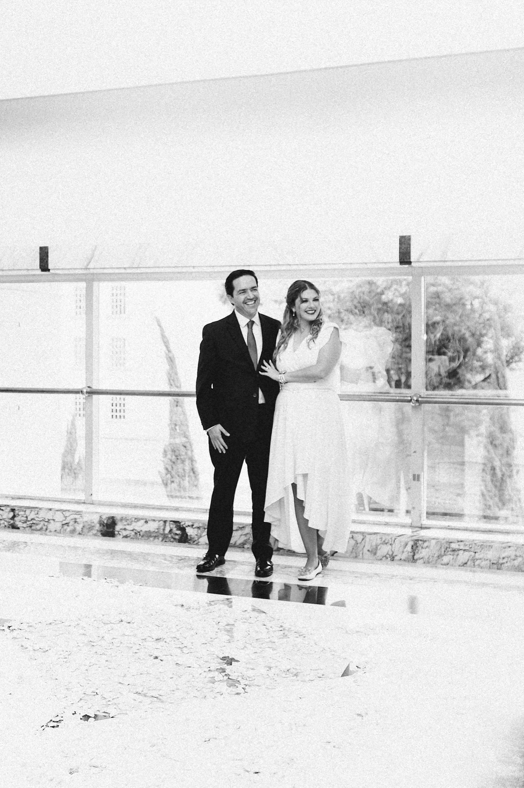
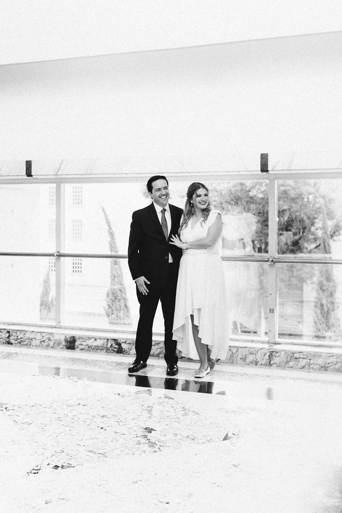
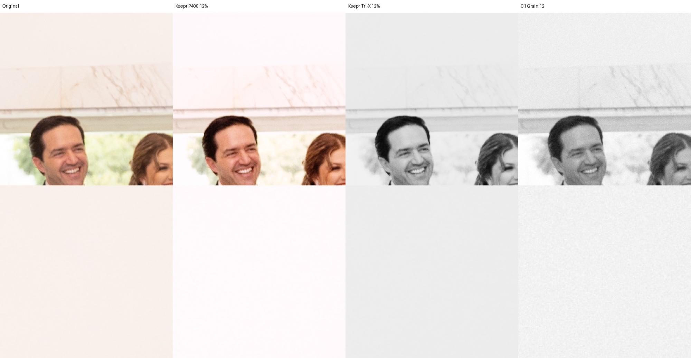

módulo04grano · emulsión
El grano depende de la emulsión.
La cantidad sale de la sensibilidad. La forma, del tipo de cristal: Tri‑X no se ve como T‑Max aunque las dos sean 400.
01
Seis formas de grano
tamaño relativo · tri‑x 35 mm = 1.00| tipo | películas | carácter | tamaño |
|---|---|---|---|
| tabular | t‑max, delta, acros, portra, ektar | fino, suave | |
| cúbico | tri‑x, hp5, fp4 | rico en plata, se agrupa | |
| duro | delta 3200, fomapan 400, color 800–1600 | áspero, visible | |
| suave | vision3, cinestill, xp2 | nubes de tinte | |
| muy fino | diapositivas, pan f, ektar 25 | casi invisible | |
| nube de tinte | el resto del negativo color | blando |
02
Cuatro rollos rápidos, la misma boda
35 mm · export completo · sin retoque

03
Mismo recorte, misma fuerza
12 %
fuenteiso
La cantidad sale de la sensibilidad del rollo.
forma6
Tipos de cristal, de tabular a nube de tinte.
formato110→8×10
Más chico el negativo, más grande el grano.
exposiciónei
Sobreexponer abre las sombras y calma el grano.